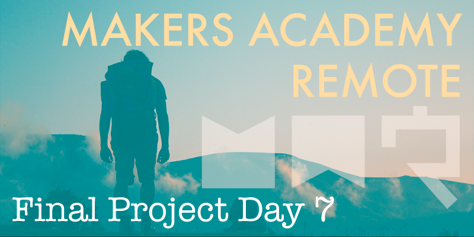

Today proved how easy it can to become blinkered by the issue at hand, without retaining a broad overview of where it fits in to the project.
Followers
For much of today we worked to implement a followers system, which would allow for one user to follow another user, and to follow specific road trips too. This however is a more complex task than it might sound, and it took a good portion of the day for the three of us to implement its most basic requirements. After hours of further development it was becoming clear that it would require the remainder of the day to make the feature work properly, even in its most basic form.
MVP?
It wasn't until one of our group asked the question ‘Is this really MVP?' that we began to question why we'd devoted so much of our time today to this one feature. It's arguable that a followers feature isn't at all required for an MVP product of this nature, especially when so many other features which are definitely MVP are still waiting to be developed. We therefore decided to put aside the branch that we'd been developing on all morning to spend the rest of the day building out the ability to add and remove various locations from a road trip's itinerary instead, a much more core piece of functionality.
Further to that we also managed to implement the uploading of photos from our web app to Amazon Web Services, meaning that users will be able to attach photos of their road trips. Development of this feature went surprisingly smoothly, and really adds a professional touch to our site, even in its current basic form.